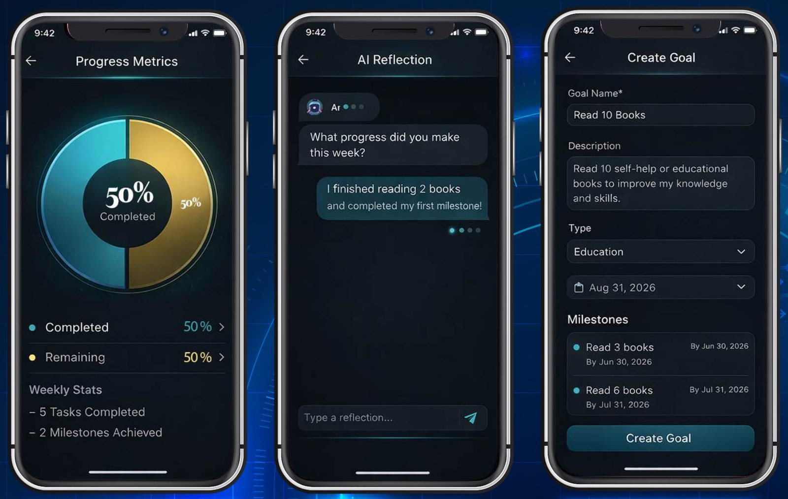
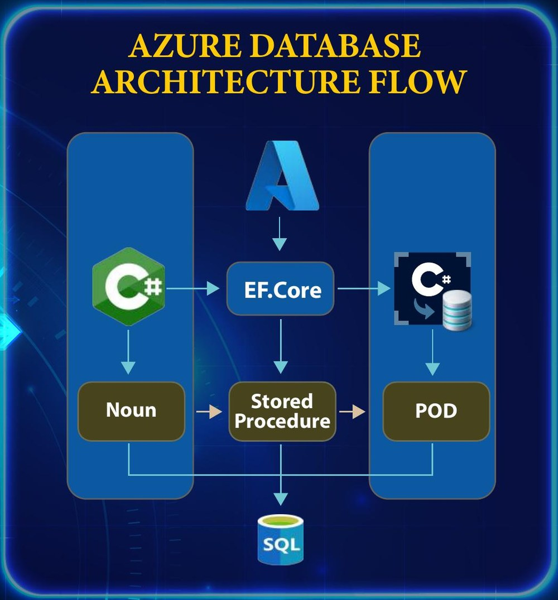

Senior Design capstone · University of Michigan-Dearborn · 2026
My Better Life
An AI-powered personal development platform. Users set personal and professional goals, break them into milestones, commit to weekly progress, and answer reflective questions to get personalized recommendations.
My role
I was team lead and AI and technical lead of a four-person team building the platform for an external client.
- Owned the architecture across the database and application layers.
- Built the CRUD pages, task and work scheduling, foreign-key reporting, and the Explain feature that links each work item to the guide task that explains it.
- Led code reviews and end-of-sprint configuration audits, including checks that no credentials were committed to Git.
Design concept

How it's built
A three-tier system: a Blazor Server front end, a C# application layer using Entity Framework Core, and an Azure SQL Server database. Data access goes through stored procedures, with live charts built using Syncfusion.
- ASP.NET Core 8
- Blazor Server
- C#
- Entity Framework Core
- Azure SQL Server
- Syncfusion
- GitHub

How the AI works
The platform is designed to feed an external AI reasoning engine. In the project's design, a cascading neural network processes user interview responses and reflection data, then passes the result through layers of auditing before it becomes personalized guidance. Our scope was the Azure SQL backend and the Blazor Server prototype, and the end-user app was out of scope.
User input data (goals, reflection patterns, challenges, progress metrics) ↓
- Neural Reasoning
- Symmetric Reasoning Auditing
- Contextual Reasoning Auditing
- Controlled Auditing
- Personalized Guidance
Results
- An Azure-based backend with full CRUD across the core tables.
- Real-time data visualization with Syncfusion charts.
- Summary queries averaged 85 ms and 40 ms in the team's tests, under the 100 ms goal.
- A scalable design that supports AI-driven recommendations and content auditing.
- 12 use cases defined, with written requirements, design and test documentation (a 90-case test plan).
FAQ and poster
View the full Senior Design poster (PDF)
Built for an external client, so the code is client-owned. This page covers the design and my role at a high level.